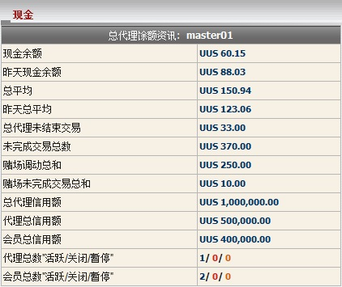

现金
定义:
这是个总体报告帮助总代理了解他/她目前的余额, 输赢数额, 支付及收取的数额。

现金
用词注解:
-
现金余额: 目前总代理包括转账交易的输赢总额。
- 昨天现金余额: 总代理输赢总额至昨日。
- 总平均: 总代理需要与上线结算的支付或收取的总数额。
- 昨天总平均: 总代理需要与上线结算的支付或收取的总数额至昨日。
- 总代理未结束交易: 总代理根据他/她的占成, 在会员投注额的分担于进行中/等待中的注单。
- 未完成交易总数: 会员投注总额于进行中/等待中的注单包括娱乐城转移金额。
- 赌场调动总和: 会员从体育博彩转移至娱乐城的总额。
- 赌场未完成交易总和: 会员投注总额于待续娱乐城游戏 (此数值只出现在会员将金额调回体育博彩)。
- 总代理信用额: 上线给予总代理的总信用额。
- 代理总信用额: 给予代理的总信用额。
- 会员总信用额: 从属该总代理给予所有会员的总信用额。
- 代理总数 "活跃/关闭/暂停": 代理数量为活跃/关闭或暂停、
- 会员总数 "活跃/关闭/暂停": 会员数量为活跃/关闭或暂停
如何理解报告:
- 现金余额 = 60.15是指总代理目前的赢额为60.15
- 昨天现金余额 = 88.03是直至昨日的赢额为88.03
- 总余额 = 150.94 指总代理将收到上线的 150.94
- 昨天总余额 = 123.06 是指昨日总代理将收上线 123.06
- 总代理未结束交易 = 33是指总代理从所有进行中/等待中的注单可能收到的最高数额为33
- 未完成交易总数 = 370是指所有会员目前的投注总额于进行中/等待中的注单包括娱乐城转移金额为370
- 赌场调动总和 = 250是指会员从体育博彩转移至娱乐城的总额为250
- 赌场未完成交易总和 = 10是指会员留下10于待续娱乐城游戏
- 总代理信用额 = 1,000,000是指最初上线给予总代理1,000,000
- 代理总信用额 = 500,000是指总代理给予其所有代理的总信用额
- 会员总信用额 = 400,000是指从属master01给予所有会员的总信用额
- 代理总数 "活跃/关闭/暂停" = 1/0/0 是指此总代理有1 活跃/ 0关闭/ 0暂停的代理
- 会员总数 "活跃/关闭/暂停" = 2/0/0 是指此总代理有2 活跃/ 0关闭/ 0暂停的会员